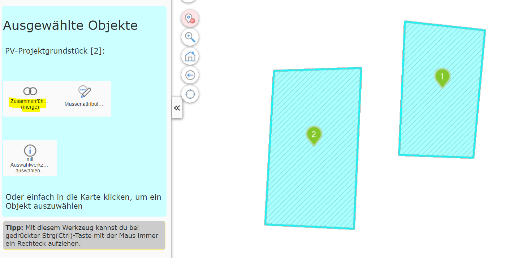
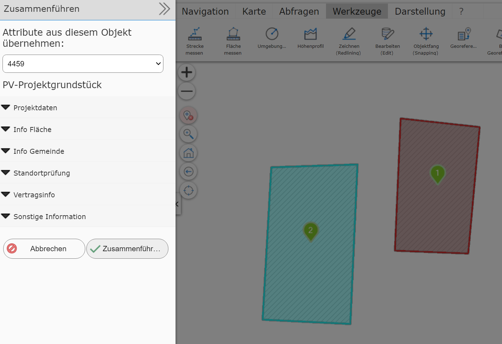
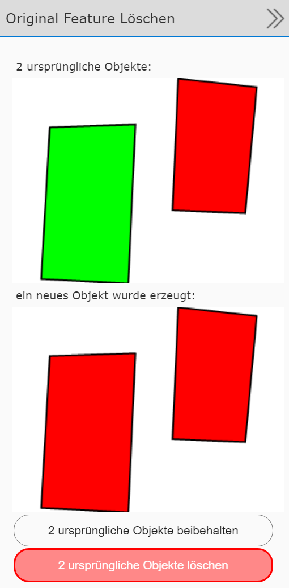

Creating Multipart Geo-Objects (merge)
This tool can be used to create a multipart object from several objects. The result is a geo-object with several geometry sections. This requires that the corresponding geo-objects are shown on the map selected via a query tool. In addition, at least two geo-objects must be selected for this process.
Switching to the editing (Edit) tool offers the create multipart tool:

Clicking the tool opens a new Create multipart dialog. Since
creating a multipart object from many objects results in exactly one object,
the next step is to decide from which of the original objects the
attribute data should be transferred to the new object:

For this, the dialog offers a selection list listing the individual IDs of the original objects. Changing the ID here changes the attribute data shown for the corresponding object. The current object is outlined red on the map.
Once the attribute data of the correct object is selected, the objects can be merged into a multipart object with Merge.
After merging, you can still decide
whether the original objects should be deleted:
{kind=link}
